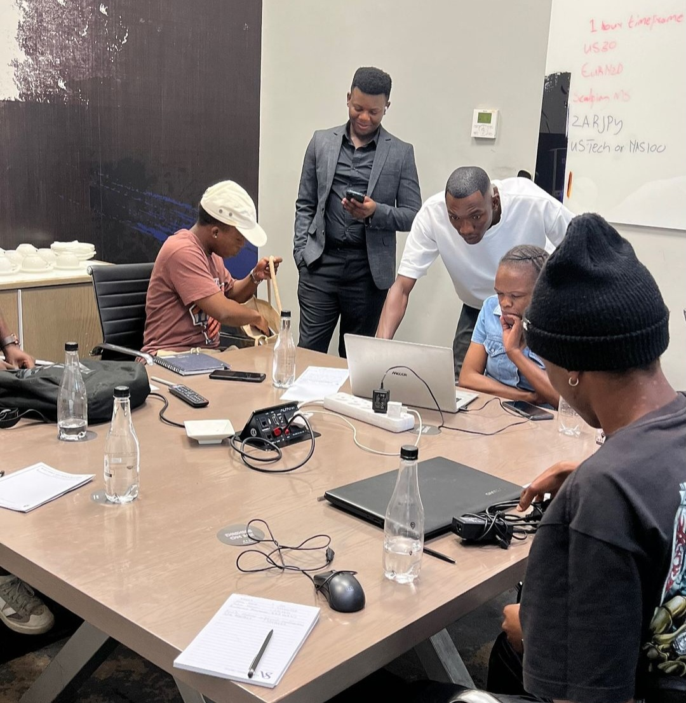

Redbillion Forex📈
Hello! Welcome to Redbillion Forex Your dedicated partner in trading

Introduction to the financial markets
Financial markets are how people and companies buy and sell assets: stocks, indices, currencies, commodities, and much more. People have traded financial markets for hundreds of years. They grew out of a practical need: to help people buy and sell things more efficiently, and to help companies that need money to raise it quickly.
Forex Trading Packages
What is Forex Trading ?
Forex, or foreign exchange, can be explained as a network of buyers and sellers, who transfer currency between each other at an agreed price. It is the means by which individuals, companies and central banks convert one currency into another – if you have ever travelled abroad, then it is likely you have made a forex transaction.
While a lot of foreign exchange is done for practical purposes, the vast majority of currency conversion is undertaken with the aim of earning a profit. The amount of currency converted every day can make price movements of some currencies extremely volatile. It is this volatility that can make forex so attractive to traders: bringing about a greater chance of high profits, while also increasing the risk.
How do currency markets work ?
Unlike shares or commodities, forex trading does not take place on exchanges but directly between two parties, in an over-the-counter (OTC) market. The forex market is run by a global network of banks, spread across four major forex trading centres in different time zones: London, New York, Sydney and Tokyo. Because there is no central location, you can trade forex 24 hours a day.
What is a base and quote currency?
A base currency is the first currency listed in a forex pair, while the second currency is called the quote currency. Forex trading always involves selling one currency in order to buy another, which is why it is quoted in pairs – the price of a forex pair is how much one unit of the base currency is worth in the quote currency.
Each currency in the pair is listed as a three-letter code, which tends to be formed of two letters that stand for the region, and one standing for the currency itself. For example, GBP/USD is a currency pair that involves buying the Great British pound and selling the US dollar.
